Benchmarking🔗
Compare the default JsonFormatter, OrjsonFormatter, and MsgspecFormatter
with the opt-in benchmark suite. Measurements cover serialization and complete
record formatting. They help you choose a backend for a workload; they do not
predict application throughput or handler I/O performance.
Run benchmarks🔗
From a repository checkout, install the benchmark dependencies:
On CPython, this group installs all three backends. On PyPy, it installs only the stdlib backend and benchmark tools. Cases for unavailable optional encoders are reported as skipped. The published comparison covers standard GIL-enabled CPython 3.10–3.15 and PyPy 3.10–3.12. Each published CPython result must contain all three backends; PyPy results contain stdlib JSON only.
Check every case without collecting performance measurements:
Collect measurements with warmup and export the results:
mkdir -p benchmark-results
uv run --no-sync pytest benchmarks --benchmark-warmup=on \
--benchmark-json=benchmark-results/python-3.15.json
You can also use tox with its uv runner:
Append -benchmark to a supported tox runtime name to benchmark that interpreter.
The workflow selects tox's benchmark label with tox -m benchmark. Ordinary
test and benchmark environments share version lists in tox.ini, so supported
versions are maintained in one place. Use uvx --with tox-uv tox -e benchmark
to use the default interpreter. Results go to the environment's
envtmpdir, such as .tox/py315-benchmark/tmp/benchmark.json. Pass pytest options
after -- to select cases or change measurement settings. For example, use
-k unicode to select Unicode workloads. Normal test runs collect only tests/
and do not need the benchmark dependencies.
The manual Benchmark JSON formatters GitHub Actions workflow runs Linux x86-64 benchmarks for the supported CPython and PyPy versions. One tox invocation runs the runtimes sequentially in one job on the same runner. The job uploads a single artifact containing one JSON file per runtime, and its summary contains the comparison tables. Timing differences never fail CI.
Measurement methodology🔗
The suite uses pytest-benchmark for pytest integration, automatic calibration,
statistics, and JSON export. Run on an otherwise idle machine, use warmup, and
repeat runs before interpreting small differences. Benchmarks and Python
environments run sequentially; do not run multiple benchmark sessions
concurrently on the same machine.
Each backend uses its default formatter configuration. The two measurement layers are:
- Serialization:
jsonify_log_record()on a prepared dictionary, including bytes-to-string conversion in theorjsonandmsgspecformatters. - Formatting:
format(LogRecord)on a prepared record, including field extraction, message handling, exception formatting where applicable, and serialization.
Formatter and record construction, payload preparation, correctness checks, and
handler I/O are outside the timed operation. Formatters and records are reused.
Checks before and after measurement verify expected parsed content and
consistent repeated output. Exception records retain exc_info, so formatting
includes rendering the traceback on each call; serialization uses prepared
exception text.
| Workload | Payload |
|---|---|
simple |
A short string message |
structured |
A string message with scalar LogRecord extras |
nested |
A dictionary message containing 100 objects with lists and nested metrics |
unicode |
A repeated message containing accented text, Japanese text, and emoji |
rich |
A dictionary message containing a UTC datetime, UUID, dataclass, bytes, an Enum class, and its members |
exception |
A message and a prepared ValueError traceback |
Default outputs can differ. Stdlib JSON escapes non-ASCII characters and uses
spaces between elements; the other backends emit compact UTF-8. UTC datetime
strings use +00:00 for stdlib and orjson, and Z for msgspec. These are
comparisons of the supported formatter defaults, including native rich-type
support and fallback encoding costs. They are not byte-identical raw encoder
comparisons. Bytes are encoded as base64 strings; the Enum class is encoded as
a list of member values, and each Enum member is encoded as its value. JSON results
record each case's output size.
Repetitions, variation, and precision🔗
Warmup and calibration run before timing. pytest-benchmark chooses a batch of
iterations per round and repeats those rounds. Statistics describe the
per-operation average duration of each round, rather than individual logging
call latencies. See the pytest-benchmark glossary.
The generated summary and timing tables record the actual round counts and iterations per round. Calibration and warmup calls are additional and are excluded from those counts. Each runtime has one full suite run; thousands of timing rounds are not thousands of independent suite runs or machines.
Timing tables show median, arithmetic mean, standard deviation (SD), and interquartile range (IQR), all in microseconds per operation. IQR is Q3 minus Q1: the width containing the middle 50% of round averages. Median and IQR are less sensitive to slow outliers than mean and SD. The JSON also retains minimum, maximum, quartiles, and outlier counts.
There is no universally trustworthy number of decimal places in microseconds. The generated summary reports the observed SD relative to the mean, including outliers. Reported times use at most three significant digits; spreads and speedups use at most two. This is display rounding, not a claim of accuracy. Batching reduces timer overhead, but cannot eliminate scheduler, garbage collection, CPU frequency, or hosted-runner variation. Do not interpret the final displayed digit as a reliable performance difference. Check IQR and SD, and repeat complete runs on the same machine before drawing conclusions about small differences.
Timing plots use labeled horizontal bars, with one panel per workload and measurement layer. Speedup plots use two panels (serialization and complete formatting), with bars grouped by workload and guides at shared group boundaries. All axes are linear and start at zero; ranges differ between panels. Compare bar lengths within a panel; use the numeric labels and tables to compare workloads. Timing bars show medians without whiskers. IQR and SD remain in the tables to show within-run variation; they do not measure between-run reproducibility. Separate speedup tables and plots divide the stdlib median by each backend's median for the same workload, layer, and Python major/minor version. The reference is CPython stdlib JSON; a standalone PyPy report uses PyPy stdlib JSON. Values above 1 mean that the backend was faster in that measurement. Speedups are descriptive ratios without inferred confidence intervals. Only stdlib JSON is measured on PyPy. All runtimes in one workflow invocation share the same runner. Runtime versions and dependencies still differ, and separate invocations can use different hardware. Comparisons do not isolate interpreter performance. Exact patch versions and environments are recorded separately.
Update results🔗
The curated baseline consists of one JSON file per Python implementation and version under
benchmarks/results/, collected from one workflow invocation. Later
workflow runs remain artifacts until explicitly selected as a replacement.
Download and extract the benchmark-results artifact from the chosen invocation into
benchmark-results/downloaded/. Keep each JSON file under its original name.
Curate the files and regenerate the tables:
python scripts/benchmark_report.py benchmark-results/downloaded/*.json \
--curate benchmarks/results
python scripts/benchmark_report.py benchmarks/results/*.json \
--update docs/benchmarking.md --plots assets/benchmarking
uv run --no-default-groups --group benchmark-report \
python scripts/benchmark_plots.py benchmarks/results/*.json \
--output docs/assets/benchmarking
Curation removes individual timing sample arrays to keep repository files small. It preserves every summary statistic and records the original file’s SHA-256 hash. Workflow artifacts retain the full samples.
Plot generation uses Matplotlib in the separate benchmark-report dependency
group; it adds no dependency to timed benchmark runs or ordinary tests. The SVG
files contain text labels and can be exported or shared separately. Both plot
types are generated from the same committed summaries as the tables.
The generator rejects incomplete or duplicate case matrices. Review the source revision, dependency versions, measurement settings, and variability before committing refreshed data. Artifact retention is finite; the committed curated JSON preserves the measurements used by this page.
Baseline results🔗
These measurements come from workflow run 40619767654. Each table records its measured source revision, exact dependency versions, and environment. Some PyPy rounds take milliseconds despite microsecond medians; these outliers are retained and can make SD exceed the mean. These measurements do not identify the cause of the pauses.
Observed repetitions: 8,500–199,721 rounds per case, with 1–100 iterations per round. Warmup and calibration calls are additional.
Within-run SD/mean: 3.9%–5.6e+02% across cases, including outliers. This does not measure between-run variation.
Python 3.10🔗
CPython 3.10.22. Measured: 2026-10-28T02:16:20.354127+00:00. Revision: 3a26fc4e64acfc167d24623c96ccd72802f834d0.
Environment: Linux 6.17.0-1022-azure, x86_64; AMD EPYC 9V74 80-Core Processor.
Dependencies: msgspec==0.22.0, orjson==3.13.0, pytest==9.1.1, pytest-benchmark==5.3.0, python-json-logger==4.3.0.dev1.
PyPy 3.10.16. Measured: 2026-10-28T02:24:54.543640+00:00. Revision: 3a26fc4e64acfc167d24623c96ccd72802f834d0.
Environment: Linux 6.17.0-1022-azure, x86_64; AMD EPYC 9V74 80-Core Processor. PyPy release: 7.3.19.
Dependencies: pytest==9.1.1, pytest-benchmark==5.3.0, python-json-logger==4.3.0.dev1.
Times and variation🔗
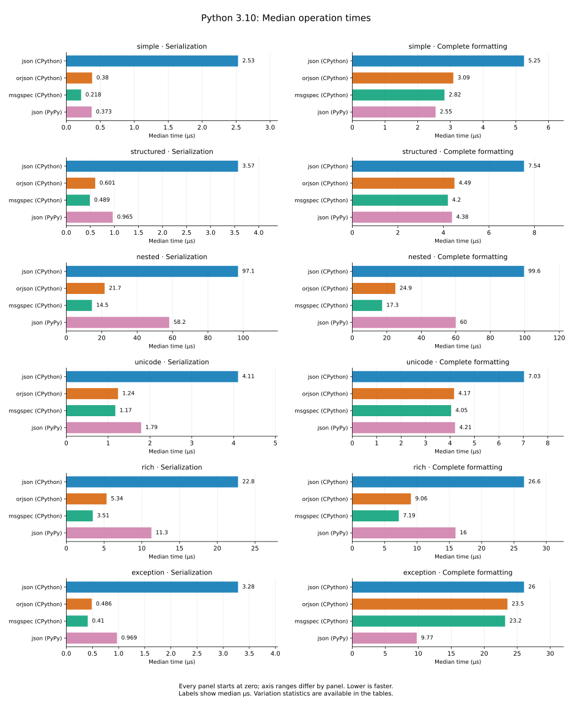
| Layer | Workload | Encoder | Median (µs) | IQR (µs) | Mean ± SD (µs) | Rounds × iterations |
|---|---|---|---|---|---|---|
| serialization | simple | json (CPython) | 2.53 | 0.042 | 2.56 ± 0.19 | 41,176 × 10 |
| serialization | simple | orjson (CPython) | 0.38 | 0.0086 | 0.389 ± 0.068 | 199,323 × 14 |
| serialization | simple | msgspec (CPython) | 0.218 | 0.0024 | 0.223 ± 0.029 | 47,502 × 100 |
| serialization | simple | json (PyPy) | 0.373 | 0.013 | 0.384 ± 0.088 | 195,389 × 15 |
| serialization | structured | json (CPython) | 3.57 | 0.08 | 3.64 ± 0.54 | 146,822 × 2 |
| serialization | structured | orjson (CPython) | 0.601 | 0.018 | 0.611 ± 0.16 | 176,119 × 10 |
| serialization | structured | msgspec (CPython) | 0.489 | 0.011 | 0.496 ± 0.077 | 195,389 × 11 |
| serialization | structured | json (PyPy) | 0.965 | 0.021 | 1.01 ± 4 | 110,828 × 10 |
| serialization | nested | json (CPython) | 97.1 | 0.97 | 98.5 ± 6.2 | 10,460 × 1 |
| serialization | nested | orjson (CPython) | 21.7 | 0.2 | 21.9 ± 1.6 | 46,835 × 1 |
| serialization | nested | msgspec (CPython) | 14.5 | 0.19 | 14.7 ± 2.4 | 71,271 × 1 |
| serialization | nested | json (PyPy) | 58.2 | 1.1 | 61.2 ± 98 | 17,936 × 1 |
| serialization | unicode | json (CPython) | 4.11 | 0.066 | 4.2 ± 0.62 | 127,195 × 2 |
| serialization | unicode | orjson (CPython) | 1.24 | 0.014 | 1.26 ± 0.15 | 83,907 × 10 |
| serialization | unicode | msgspec (CPython) | 1.17 | 0.013 | 1.19 ± 0.12 | 87,131 × 10 |
| serialization | unicode | json (PyPy) | 1.79 | 0.024 | 1.84 ± 0.26 | 57,614 × 10 |
| serialization | rich | json (CPython) | 22.8 | 0.29 | 23.2 ± 2.1 | 45,202 × 1 |
| serialization | rich | orjson (CPython) | 5.34 | 0.11 | 5.42 ± 0.8 | 196,967 × 1 |
| serialization | rich | msgspec (CPython) | 3.51 | 0.065 | 3.56 ± 0.46 | 153,847 × 2 |
| serialization | rich | json (PyPy) | 11.3 | 0.2 | 11.7 ± 29 | 94,823 × 1 |
| serialization | exception | json (CPython) | 3.28 | 0.065 | 3.35 ± 0.52 | 158,756 × 2 |
| serialization | exception | orjson (CPython) | 0.486 | 0.015 | 0.494 ± 0.074 | 197,356 × 11 |
| serialization | exception | msgspec (CPython) | 0.41 | 0.0093 | 0.417 ± 0.066 | 186,290 × 14 |
| serialization | exception | json (PyPy) | 0.969 | 0.02 | 0.991 ± 0.15 | 109,602 × 10 |
| formatting | simple | json (CPython) | 5.25 | 0.1 | 5.35 ± 0.68 | 100,960 × 2 |
| formatting | simple | orjson (CPython) | 3.09 | 0.075 | 3.15 ± 0.46 | 170,970 × 2 |
| formatting | simple | msgspec (CPython) | 2.82 | 0.065 | 2.86 ± 0.41 | 185,598 × 2 |
| formatting | simple | json (PyPy) | 2.55 | 0.038 | 2.64 ± 0.82 | 40,606 × 10 |
| formatting | structured | json (CPython) | 7.54 | 0.16 | 7.67 ± 1 | 140,430 × 1 |
| formatting | structured | orjson (CPython) | 4.49 | 0.086 | 4.56 ± 0.55 | 115,701 × 2 |
| formatting | structured | msgspec (CPython) | 4.2 | 0.099 | 4.25 ± 0.49 | 122,820 × 2 |
| formatting | structured | json (PyPy) | 4.38 | 0.07 | 4.5 ± 2.3 | 121,922 × 2 |
| formatting | nested | json (CPython) | 99.6 | 1 | 101 ± 4.4 | 10,048 × 1 |
| formatting | nested | orjson (CPython) | 24.9 | 0.28 | 25.3 ± 1.8 | 41,518 × 1 |
| formatting | nested | msgspec (CPython) | 17.3 | 0.22 | 17.5 ± 1.5 | 59,720 × 1 |
| formatting | nested | json (PyPy) | 60 | 1.8 | 64.1 ± 1e+02 | 17,314 × 1 |
| formatting | unicode | json (CPython) | 7.03 | 0.13 | 7.16 ± 1.1 | 149,254 × 1 |
| formatting | unicode | orjson (CPython) | 4.17 | 0.07 | 4.24 ± 0.54 | 125,597 × 2 |
| formatting | unicode | msgspec (CPython) | 4.05 | 0.13 | 4.09 ± 0.52 | 129,333 × 2 |
| formatting | unicode | json (PyPy) | 4.21 | 0.07 | 4.45 ± 20 | 122,971 × 2 |
| formatting | rich | json (CPython) | 26.6 | 0.32 | 27 ± 2 | 39,034 × 1 |
| formatting | rich | orjson (CPython) | 9.06 | 0.14 | 9.19 ± 1.1 | 114,640 × 1 |
| formatting | rich | msgspec (CPython) | 7.19 | 0.13 | 7.31 ± 0.96 | 144,928 × 1 |
| formatting | rich | json (PyPy) | 16 | 0.28 | 16.5 ± 3.3 | 66,038 × 1 |
| formatting | exception | json (CPython) | 26 | 0.36 | 26.5 ± 2.3 | 39,608 × 1 |
| formatting | exception | orjson (CPython) | 23.5 | 0.31 | 23.9 ± 1.9 | 44,201 × 1 |
| formatting | exception | msgspec (CPython) | 23.2 | 0.3 | 23.6 ± 2.1 | 44,457 × 1 |
| formatting | exception | json (PyPy) | 9.77 | 0.17 | 10.7 ± 47 | 106,338 × 1 |
Speedup🔗
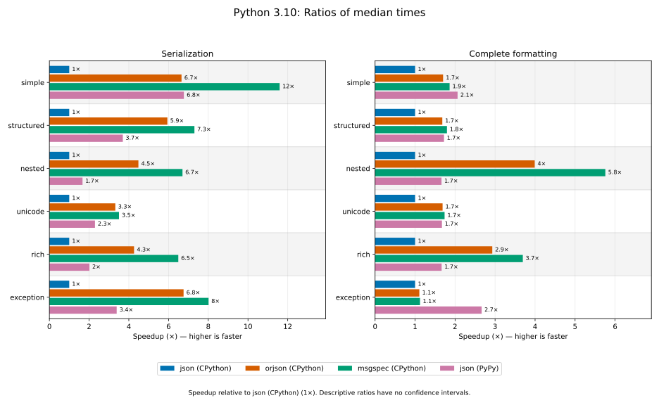
Reference: json (CPython) (1×).
| Layer | Workload | json (CPython) | orjson (CPython) | msgspec (CPython) | json (PyPy) |
|---|---|---|---|---|---|
| serialization | simple | 1× | 6.7× | 12× | 6.8× |
| serialization | structured | 1× | 5.9× | 7.3× | 3.7× |
| serialization | nested | 1× | 4.5× | 6.7× | 1.7× |
| serialization | unicode | 1× | 3.3× | 3.5× | 2.3× |
| serialization | rich | 1× | 4.3× | 6.5× | 2× |
| serialization | exception | 1× | 6.8× | 8× | 3.4× |
| formatting | simple | 1× | 1.7× | 1.9× | 2.1× |
| formatting | structured | 1× | 1.7× | 1.8× | 1.7× |
| formatting | nested | 1× | 4× | 5.8× | 1.7× |
| formatting | unicode | 1× | 1.7× | 1.7× | 1.7× |
| formatting | rich | 1× | 2.9× | 3.7× | 1.7× |
| formatting | exception | 1× | 1.1× | 1.1× | 2.7× |
Python 3.11🔗
CPython 3.11.18. Measured: 2026-10-28T02:18:00.061021+00:00. Revision: 3a26fc4e64acfc167d24623c96ccd72802f834d0.
Environment: Linux 6.17.0-1022-azure, x86_64; AMD EPYC 9V74 80-Core Processor.
Dependencies: msgspec==0.22.0, orjson==3.13.0, pytest==9.1.1, pytest-benchmark==5.3.0, python-json-logger==4.3.0.dev1.
PyPy 3.11.17. Measured: 2026-10-28T02:25:31.091341+00:00. Revision: 3a26fc4e64acfc167d24623c96ccd72802f834d0.
Environment: Linux 6.17.0-1022-azure, x86_64; AMD EPYC 9V74 80-Core Processor. PyPy release: 8.0.1.
Dependencies: pytest==9.1.1, pytest-benchmark==5.3.0, python-json-logger==4.3.0.dev1.
Times and variation🔗
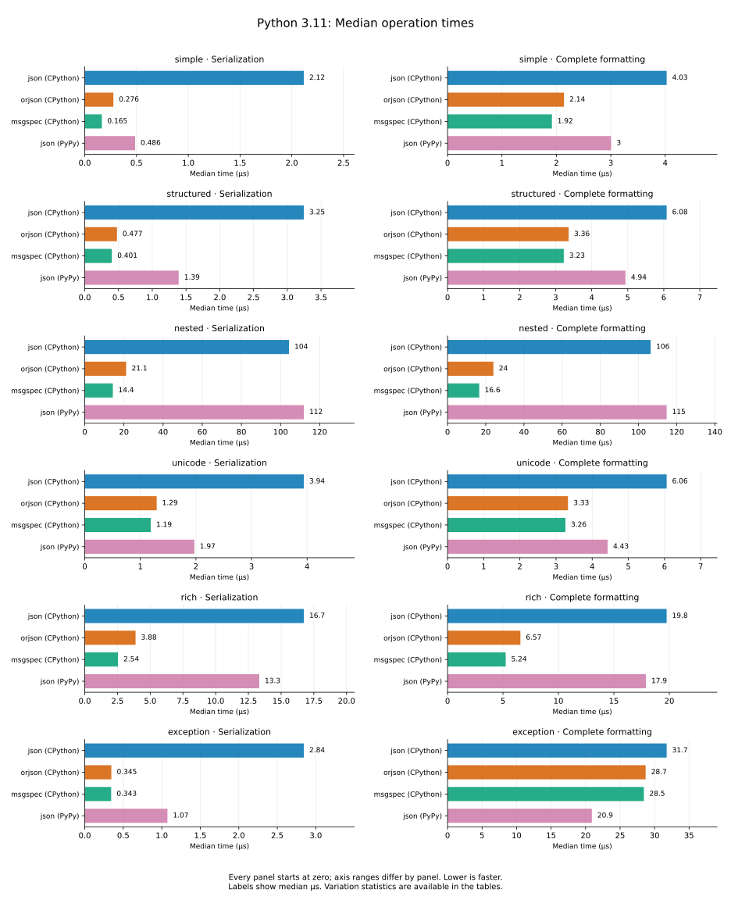
| Layer | Workload | Encoder | Median (µs) | IQR (µs) | Mean ± SD (µs) | Rounds × iterations |
|---|---|---|---|---|---|---|
| serialization | simple | json (CPython) | 2.12 | 0.04 | 2.18 ± 0.29 | 48,755 × 10 |
| serialization | simple | orjson (CPython) | 0.276 | 0.0085 | 0.287 ± 0.098 | 191,278 × 20 |
| serialization | simple | msgspec (CPython) | 0.165 | 0.002 | 0.169 ± 0.021 | 62,132 × 100 |
| serialization | simple | json (PyPy) | 0.486 | 0.013 | 0.5 ± 0.31 | 182,183 × 12 |
| serialization | structured | json (CPython) | 3.25 | 0.07 | 3.34 ± 0.75 | 165,317 × 2 |
| serialization | structured | orjson (CPython) | 0.477 | 0.012 | 0.486 ± 0.076 | 182,516 × 12 |
| serialization | structured | msgspec (CPython) | 0.401 | 0.0086 | 0.407 ± 0.058 | 186,986 × 14 |
| serialization | structured | json (PyPy) | 1.39 | 0.025 | 1.42 ± 0.17 | 75,132 × 10 |
| serialization | nested | json (CPython) | 104 | 1.2 | 106 ± 4.9 | 9,796 × 1 |
| serialization | nested | orjson (CPython) | 21.1 | 0.18 | 21.4 ± 1.6 | 48,305 × 1 |
| serialization | nested | msgspec (CPython) | 14.4 | 0.2 | 14.5 ± 1.3 | 72,569 × 1 |
| serialization | nested | json (PyPy) | 112 | 1.7 | 117 ± 1.4e+02 | 9,107 × 1 |
| serialization | unicode | json (CPython) | 3.94 | 0.06 | 4.01 ± 0.57 | 131,909 × 2 |
| serialization | unicode | orjson (CPython) | 1.29 | 0.017 | 1.31 ± 0.13 | 80,071 × 10 |
| serialization | unicode | msgspec (CPython) | 1.19 | 0.01 | 1.2 ± 0.12 | 85,347 × 10 |
| serialization | unicode | json (PyPy) | 1.97 | 0.031 | 2.05 ± 0.48 | 54,804 × 10 |
| serialization | rich | json (CPython) | 16.7 | 0.23 | 17 ± 1.5 | 61,558 × 1 |
| serialization | rich | orjson (CPython) | 3.88 | 0.07 | 3.93 ± 0.48 | 134,935 × 2 |
| serialization | rich | msgspec (CPython) | 2.54 | 0.033 | 2.57 ± 0.19 | 40,706 × 10 |
| serialization | rich | json (PyPy) | 13.3 | 0.26 | 13.6 ± 1.9 | 78,685 × 1 |
| serialization | exception | json (CPython) | 2.84 | 0.055 | 2.9 ± 0.49 | 183,554 × 2 |
| serialization | exception | orjson (CPython) | 0.345 | 0.006 | 0.35 ± 0.052 | 198,492 × 15 |
| serialization | exception | msgspec (CPython) | 0.343 | 0.0063 | 0.348 ± 0.051 | 188,751 × 16 |
| serialization | exception | json (PyPy) | 1.07 | 0.06 | 1.09 ± 2.4 | 102,512 × 10 |
| formatting | simple | json (CPython) | 4.03 | 0.09 | 4.09 ± 0.54 | 132,258 × 2 |
| formatting | simple | orjson (CPython) | 2.14 | 0.037 | 2.17 ± 0.2 | 51,099 × 10 |
| formatting | simple | msgspec (CPython) | 1.92 | 0.038 | 1.94 ± 0.16 | 54,148 × 10 |
| formatting | simple | json (PyPy) | 3 | 0.07 | 3.12 ± 10 | 184,230 × 2 |
| formatting | structured | json (CPython) | 6.08 | 0.13 | 6.18 ± 0.91 | 173,041 × 1 |
| formatting | structured | orjson (CPython) | 3.36 | 0.08 | 3.4 ± 0.45 | 157,011 × 2 |
| formatting | structured | msgspec (CPython) | 3.23 | 0.066 | 3.28 ± 0.47 | 163,693 × 2 |
| formatting | structured | json (PyPy) | 4.94 | 0.25 | 5.07 ± 13 | 109,963 × 2 |
| formatting | nested | json (CPython) | 106 | 1.4 | 109 ± 8.6 | 9,697 × 1 |
| formatting | nested | orjson (CPython) | 24 | 0.23 | 24.4 ± 2 | 42,561 × 1 |
| formatting | nested | msgspec (CPython) | 16.6 | 0.22 | 16.8 ± 1.3 | 63,156 × 1 |
| formatting | nested | json (PyPy) | 115 | 2.6 | 121 ± 1.6e+02 | 8,852 × 1 |
| formatting | unicode | json (CPython) | 6.06 | 0.12 | 6.17 ± 1 | 174,277 × 1 |
| formatting | unicode | orjson (CPython) | 3.33 | 0.07 | 3.39 ± 0.51 | 157,754 × 2 |
| formatting | unicode | msgspec (CPython) | 3.26 | 0.06 | 3.31 ± 0.44 | 160,257 × 2 |
| formatting | unicode | json (PyPy) | 4.43 | 0.091 | 4.53 ± 0.67 | 118,864 × 2 |
| formatting | rich | json (CPython) | 19.8 | 0.27 | 20.1 ± 1.7 | 53,110 × 1 |
| formatting | rich | orjson (CPython) | 6.57 | 0.13 | 6.66 ± 0.87 | 160,540 × 1 |
| formatting | rich | msgspec (CPython) | 5.24 | 0.095 | 5.31 ± 0.57 | 99,553 × 2 |
| formatting | rich | json (PyPy) | 17.9 | 0.31 | 18.4 ± 2.5 | 58,391 × 1 |
| formatting | exception | json (CPython) | 31.7 | 0.44 | 32.3 ± 2.6 | 32,409 × 1 |
| formatting | exception | orjson (CPython) | 28.7 | 0.42 | 29.3 ± 2.8 | 35,813 × 1 |
| formatting | exception | msgspec (CPython) | 28.5 | 0.41 | 28.9 ± 2.3 | 36,192 × 1 |
| formatting | exception | json (PyPy) | 20.9 | 0.4 | 22.8 ± 63 | 49,213 × 1 |
Speedup🔗
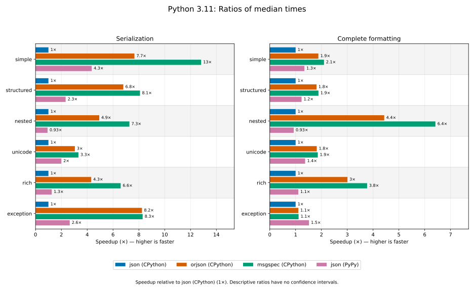
Reference: json (CPython) (1×).
| Layer | Workload | json (CPython) | orjson (CPython) | msgspec (CPython) | json (PyPy) |
|---|---|---|---|---|---|
| serialization | simple | 1× | 7.7× | 13× | 4.3× |
| serialization | structured | 1× | 6.8× | 8.1× | 2.3× |
| serialization | nested | 1× | 4.9× | 7.3× | 0.93× |
| serialization | unicode | 1× | 3× | 3.3× | 2× |
| serialization | rich | 1× | 4.3× | 6.6× | 1.3× |
| serialization | exception | 1× | 8.2× | 8.3× | 2.6× |
| formatting | simple | 1× | 1.9× | 2.1× | 1.3× |
| formatting | structured | 1× | 1.8× | 1.9× | 1.2× |
| formatting | nested | 1× | 4.4× | 6.4× | 0.93× |
| formatting | unicode | 1× | 1.8× | 1.9× | 1.4× |
| formatting | rich | 1× | 3× | 3.8× | 1.1× |
| formatting | exception | 1× | 1.1× | 1.1× | 1.5× |
Python 3.12🔗
CPython 3.12.3. Measured: 2026-10-28T02:19:33.887630+00:00. Revision: 3a26fc4e64acfc167d24623c96ccd72802f834d0.
Environment: Linux 6.17.0-1022-azure, x86_64; AMD EPYC 9V74 80-Core Processor.
Dependencies: msgspec==0.22.0, orjson==3.13.0, pytest==9.1.1, pytest-benchmark==5.3.0, python-json-logger==4.3.0.dev1.
PyPy 3.12.15. Measured: 2026-10-28T02:26:07.723934+00:00. Revision: 3a26fc4e64acfc167d24623c96ccd72802f834d0.
Environment: Linux 6.17.0-1022-azure, x86_64; AMD EPYC 9V74 80-Core Processor. PyPy release: 8.0.1.
Dependencies: pytest==9.1.1, pytest-benchmark==5.3.0, python-json-logger==4.3.0.dev1.
Times and variation🔗
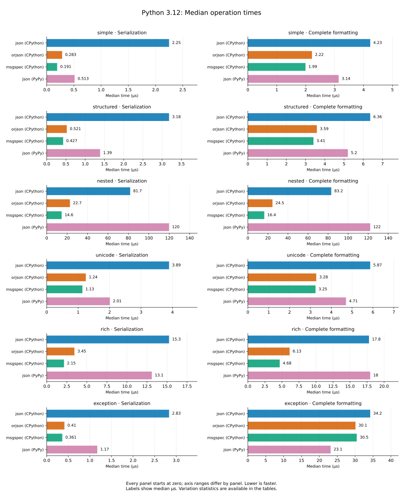
| Layer | Workload | Encoder | Median (µs) | IQR (µs) | Mean ± SD (µs) | Rounds × iterations |
|---|---|---|---|---|---|---|
| serialization | simple | json (CPython) | 2.25 | 0.024 | 2.28 ± 0.19 | 45,282 × 10 |
| serialization | simple | orjson (CPython) | 0.283 | 0.012 | 0.292 ± 0.062 | 198,099 × 17 |
| serialization | simple | msgspec (CPython) | 0.191 | 0.0026 | 0.194 ± 0.017 | 54,031 × 100 |
| serialization | simple | json (PyPy) | 0.513 | 0.015 | 0.533 ± 2.1 | 189,108 × 11 |
| serialization | structured | json (CPython) | 3.18 | 0.044 | 3.25 ± 1.1 | 162,629 × 2 |
| serialization | structured | orjson (CPython) | 0.521 | 0.011 | 0.528 ± 0.096 | 199,323 × 10 |
| serialization | structured | msgspec (CPython) | 0.427 | 0.0099 | 0.433 ± 0.075 | 189,108 × 13 |
| serialization | structured | json (PyPy) | 1.39 | 0.024 | 1.41 ± 0.16 | 74,683 × 10 |
| serialization | nested | json (CPython) | 81.7 | 0.69 | 82.8 ± 4.4 | 12,510 × 1 |
| serialization | nested | orjson (CPython) | 22.7 | 0.17 | 23 ± 1.9 | 44,755 × 1 |
| serialization | nested | msgspec (CPython) | 14.6 | 0.17 | 14.8 ± 1.6 | 70,867 × 1 |
| serialization | nested | json (PyPy) | 120 | 2.2 | 123 ± 12 | 8,688 × 1 |
| serialization | unicode | json (CPython) | 3.89 | 0.045 | 3.95 ± 0.55 | 132,767 × 2 |
| serialization | unicode | orjson (CPython) | 1.24 | 0.016 | 1.26 ± 0.17 | 81,847 × 10 |
| serialization | unicode | msgspec (CPython) | 1.13 | 0.012 | 1.15 ± 0.14 | 89,630 × 10 |
| serialization | unicode | json (PyPy) | 2.01 | 0.1 | 2.02 ± 0.21 | 53,511 × 10 |
| serialization | rich | json (CPython) | 15.3 | 0.2 | 15.5 ± 1.9 | 67,834 × 1 |
| serialization | rich | orjson (CPython) | 3.45 | 0.054 | 3.5 ± 0.52 | 149,701 × 2 |
| serialization | rich | msgspec (CPython) | 2.15 | 0.027 | 2.18 ± 0.21 | 47,706 × 10 |
| serialization | rich | json (PyPy) | 13.1 | 0.23 | 13.6 ± 33 | 80,007 × 1 |
| serialization | exception | json (CPython) | 2.83 | 0.039 | 2.88 ± 0.44 | 181,885 × 2 |
| serialization | exception | orjson (CPython) | 0.41 | 0.0085 | 0.416 ± 0.065 | 195,008 × 13 |
| serialization | exception | msgspec (CPython) | 0.361 | 0.006 | 0.366 ± 0.053 | 190,187 × 15 |
| serialization | exception | json (PyPy) | 1.17 | 0.016 | 1.19 ± 0.16 | 87,658 × 10 |
| formatting | simple | json (CPython) | 4.23 | 0.07 | 4.29 ± 0.53 | 120,584 × 2 |
| formatting | simple | orjson (CPython) | 2.22 | 0.027 | 2.25 ± 0.18 | 46,551 × 10 |
| formatting | simple | msgspec (CPython) | 1.99 | 0.026 | 2.05 ± 0.45 | 51,285 × 10 |
| formatting | simple | json (PyPy) | 3.14 | 0.05 | 3.3 ± 19 | 166,141 × 2 |
| formatting | structured | json (CPython) | 6.36 | 0.1 | 6.49 ± 1.2 | 161,839 × 1 |
| formatting | structured | orjson (CPython) | 3.59 | 0.066 | 3.63 ± 0.45 | 146,413 × 2 |
| formatting | structured | msgspec (CPython) | 3.41 | 0.061 | 3.46 ± 0.44 | 153,870 × 2 |
| formatting | structured | json (PyPy) | 5.2 | 0.081 | 5.43 ± 22 | 198,138 × 1 |
| formatting | nested | json (CPython) | 83.2 | 0.8 | 84.1 ± 3.3 | 12,369 × 1 |
| formatting | nested | orjson (CPython) | 24.5 | 0.2 | 24.8 ± 1.7 | 41,467 × 1 |
| formatting | nested | msgspec (CPython) | 16.4 | 0.18 | 16.6 ± 1.3 | 62,720 × 1 |
| formatting | nested | json (PyPy) | 122 | 2.9 | 125 ± 37 | 8,500 × 1 |
| formatting | unicode | json (CPython) | 5.87 | 0.08 | 5.95 ± 0.81 | 173,974 × 1 |
| formatting | unicode | orjson (CPython) | 3.28 | 0.06 | 3.38 ± 1.3 | 161,031 × 2 |
| formatting | unicode | msgspec (CPython) | 3.25 | 0.056 | 3.29 ± 0.41 | 159,745 × 2 |
| formatting | unicode | json (PyPy) | 4.71 | 0.09 | 4.88 ± 13 | 111,434 × 2 |
| formatting | rich | json (CPython) | 17.8 | 0.23 | 18.1 ± 1.9 | 57,684 × 1 |
| formatting | rich | orjson (CPython) | 6.13 | 0.12 | 6.33 ± 1.2 | 169,521 × 1 |
| formatting | rich | msgspec (CPython) | 4.68 | 0.09 | 4.74 ± 0.51 | 108,296 × 2 |
| formatting | rich | json (PyPy) | 18 | 0.3 | 18.9 ± 59 | 57,817 × 1 |
| formatting | exception | json (CPython) | 34.2 | 0.53 | 35.4 ± 6.8 | 29,950 × 1 |
| formatting | exception | orjson (CPython) | 30.1 | 0.45 | 30.7 ± 3 | 34,887 × 1 |
| formatting | exception | msgspec (CPython) | 30.5 | 0.49 | 31.1 ± 3.1 | 33,882 × 1 |
| formatting | exception | json (PyPy) | 23.1 | 0.43 | 25.8 ± 90 | 45,223 × 1 |
Speedup🔗
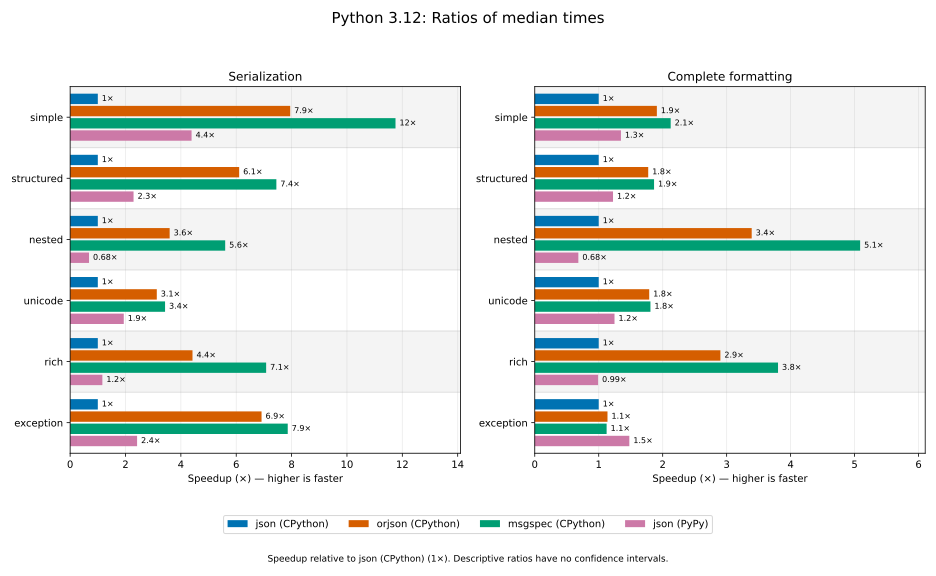
Reference: json (CPython) (1×).
| Layer | Workload | json (CPython) | orjson (CPython) | msgspec (CPython) | json (PyPy) |
|---|---|---|---|---|---|
| serialization | simple | 1× | 7.9× | 12× | 4.4× |
| serialization | structured | 1× | 6.1× | 7.4× | 2.3× |
| serialization | nested | 1× | 3.6× | 5.6× | 0.68× |
| serialization | unicode | 1× | 3.1× | 3.4× | 1.9× |
| serialization | rich | 1× | 4.4× | 7.1× | 1.2× |
| serialization | exception | 1× | 6.9× | 7.9× | 2.4× |
| formatting | simple | 1× | 1.9× | 2.1× | 1.3× |
| formatting | structured | 1× | 1.8× | 1.9× | 1.2× |
| formatting | nested | 1× | 3.4× | 5.1× | 0.68× |
| formatting | unicode | 1× | 1.8× | 1.8× | 1.2× |
| formatting | rich | 1× | 2.9× | 3.8× | 0.99× |
| formatting | exception | 1× | 1.1× | 1.1× | 1.5× |
Python 3.13🔗
CPython 3.13.18. Measured: 2026-10-28T02:21:07.877875+00:00. Revision: 3a26fc4e64acfc167d24623c96ccd72802f834d0.
Environment: Linux 6.17.0-1022-azure, x86_64; AMD EPYC 9V74 80-Core Processor.
Dependencies: msgspec==0.22.0, orjson==3.13.0, pytest==9.1.1, pytest-benchmark==5.3.0, python-json-logger==4.3.0.dev1.
Times and variation🔗
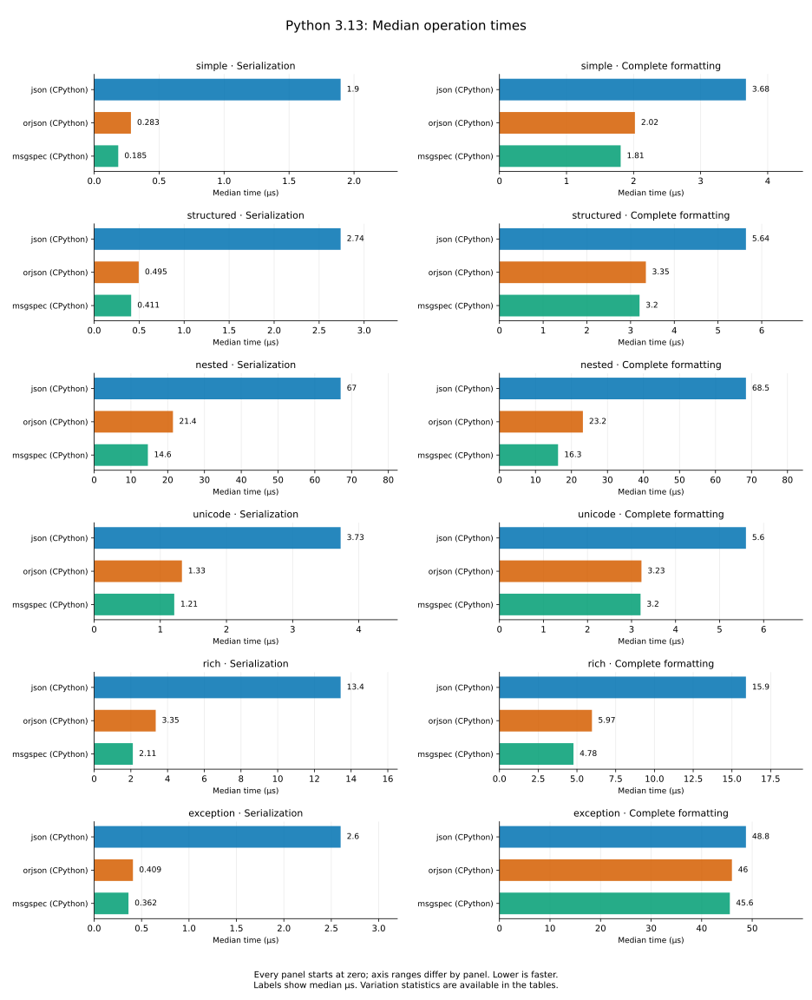
| Layer | Workload | Encoder | Median (µs) | IQR (µs) | Mean ± SD (µs) | Rounds × iterations |
|---|---|---|---|---|---|---|
| serialization | simple | json (CPython) | 1.9 | 0.024 | 1.94 ± 0.23 | 55,136 × 10 |
| serialization | simple | orjson (CPython) | 0.283 | 0.0043 | 0.288 ± 0.047 | 191,315 × 19 |
| serialization | simple | msgspec (CPython) | 0.185 | 0.0027 | 0.191 ± 0.038 | 53,283 × 100 |
| serialization | structured | json (CPython) | 2.74 | 0.056 | 2.84 ± 0.58 | 190,913 × 2 |
| serialization | structured | orjson (CPython) | 0.495 | 0.0092 | 0.504 ± 0.12 | 187,688 × 11 |
| serialization | structured | msgspec (CPython) | 0.411 | 0.0085 | 0.417 ± 0.058 | 192,753 × 13 |
| serialization | nested | json (CPython) | 67 | 0.71 | 68 ± 3.2 | 15,233 × 1 |
| serialization | nested | orjson (CPython) | 21.4 | 0.13 | 21.8 ± 1.9 | 47,345 × 1 |
| serialization | nested | msgspec (CPython) | 14.6 | 0.18 | 14.8 ± 1.3 | 70,867 × 1 |
| serialization | unicode | json (CPython) | 3.73 | 0.045 | 3.78 ± 0.46 | 140,430 × 2 |
| serialization | unicode | orjson (CPython) | 1.33 | 0.021 | 1.35 ± 0.15 | 77,767 × 10 |
| serialization | unicode | msgspec (CPython) | 1.21 | 0.013 | 1.23 ± 0.12 | 84,761 × 10 |
| serialization | rich | json (CPython) | 13.4 | 0.18 | 13.7 ± 1.7 | 77,227 × 1 |
| serialization | rich | orjson (CPython) | 3.35 | 0.065 | 3.4 ± 0.42 | 155,280 × 2 |
| serialization | rich | msgspec (CPython) | 2.11 | 0.03 | 2.13 ± 0.15 | 50,000 × 10 |
| serialization | exception | json (CPython) | 2.6 | 0.049 | 2.63 ± 0.36 | 199,721 × 2 |
| serialization | exception | orjson (CPython) | 0.409 | 0.0085 | 0.414 ± 0.058 | 199,323 × 13 |
| serialization | exception | msgspec (CPython) | 0.362 | 0.008 | 0.366 ± 0.05 | 188,751 × 15 |
| formatting | simple | json (CPython) | 3.68 | 0.065 | 3.72 ± 0.45 | 142,634 × 2 |
| formatting | simple | orjson (CPython) | 2.02 | 0.029 | 2.05 ± 0.21 | 51,154 × 10 |
| formatting | simple | msgspec (CPython) | 1.81 | 0.024 | 1.83 ± 0.15 | 57,817 × 10 |
| formatting | structured | json (CPython) | 5.64 | 0.11 | 5.75 ± 1.2 | 187,688 × 1 |
| formatting | structured | orjson (CPython) | 3.35 | 0.065 | 3.39 ± 0.42 | 156,740 × 2 |
| formatting | structured | msgspec (CPython) | 3.2 | 0.065 | 3.25 ± 0.46 | 164,231 × 2 |
| formatting | nested | json (CPython) | 68.5 | 0.64 | 69.4 ± 3.4 | 14,892 × 1 |
| formatting | nested | orjson (CPython) | 23.2 | 0.18 | 23.5 ± 1.7 | 43,930 × 1 |
| formatting | nested | msgspec (CPython) | 16.3 | 0.19 | 16.5 ± 1.3 | 63,400 × 1 |
| formatting | unicode | json (CPython) | 5.6 | 0.1 | 5.67 ± 0.82 | 189,466 × 1 |
| formatting | unicode | orjson (CPython) | 3.23 | 0.055 | 3.28 ± 0.46 | 162,101 × 2 |
| formatting | unicode | msgspec (CPython) | 3.2 | 0.06 | 3.25 ± 0.44 | 160,798 × 2 |
| formatting | rich | json (CPython) | 15.9 | 0.25 | 16.2 ± 1.5 | 65,390 × 1 |
| formatting | rich | orjson (CPython) | 5.97 | 0.14 | 6.06 ± 0.86 | 177,684 × 1 |
| formatting | rich | msgspec (CPython) | 4.78 | 0.08 | 4.84 ± 0.53 | 112,196 × 2 |
| formatting | exception | json (CPython) | 48.8 | 1 | 50.9 ± 9.4 | 21,119 × 1 |
| formatting | exception | orjson (CPython) | 46 | 0.77 | 47.1 ± 4.2 | 22,469 × 1 |
| formatting | exception | msgspec (CPython) | 45.6 | 0.76 | 46.7 ± 4.3 | 22,540 × 1 |
Speedup🔗
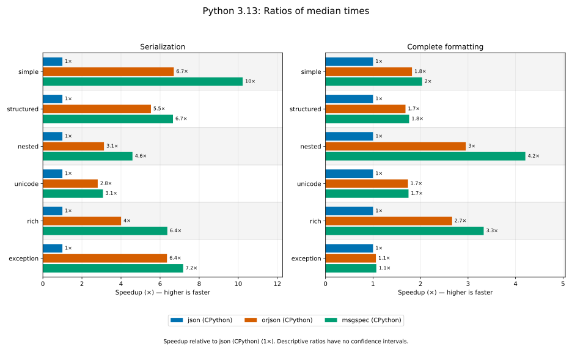
Reference: json (CPython) (1×).
| Layer | Workload | json (CPython) | orjson (CPython) | msgspec (CPython) |
|---|---|---|---|---|
| serialization | simple | 1× | 6.7× | 10× |
| serialization | structured | 1× | 5.5× | 6.7× |
| serialization | nested | 1× | 3.1× | 4.6× |
| serialization | unicode | 1× | 2.8× | 3.1× |
| serialization | rich | 1× | 4× | 6.4× |
| serialization | exception | 1× | 6.4× | 7.2× |
| formatting | simple | 1× | 1.8× | 2× |
| formatting | structured | 1× | 1.7× | 1.8× |
| formatting | nested | 1× | 3× | 4.2× |
| formatting | unicode | 1× | 1.7× | 1.7× |
| formatting | rich | 1× | 2.7× | 3.3× |
| formatting | exception | 1× | 1.1× | 1.1× |
Python 3.14🔗
CPython 3.14.10. Measured: 2026-10-28T02:22:40.796372+00:00. Revision: 3a26fc4e64acfc167d24623c96ccd72802f834d0.
Environment: Linux 6.17.0-1022-azure, x86_64; AMD EPYC 9V74 80-Core Processor.
Dependencies: msgspec==0.22.0, orjson==3.13.0, pytest==9.1.1, pytest-benchmark==5.3.0, python-json-logger==4.3.0.dev1.
Times and variation🔗
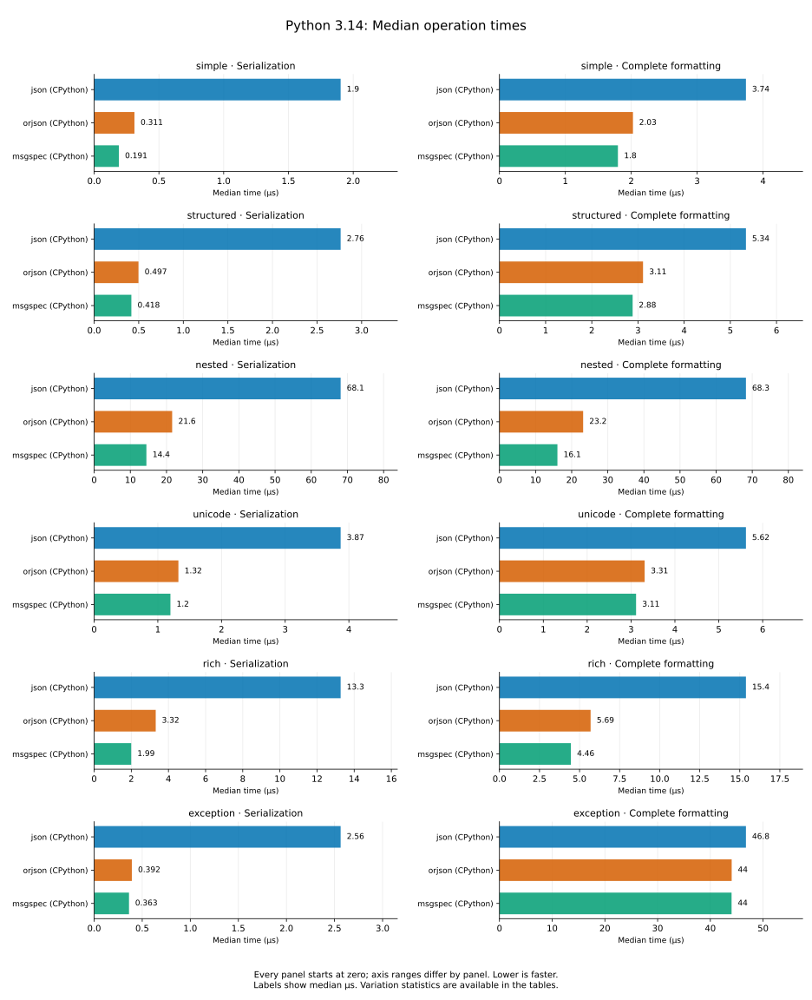
| Layer | Workload | Encoder | Median (µs) | IQR (µs) | Mean ± SD (µs) | Rounds × iterations |
|---|---|---|---|---|---|---|
| serialization | simple | json (CPython) | 1.9 | 0.02 | 1.94 ± 0.21 | 53,857 × 10 |
| serialization | simple | orjson (CPython) | 0.311 | 0.0054 | 0.32 ± 0.071 | 196,541 × 17 |
| serialization | simple | msgspec (CPython) | 0.191 | 0.0015 | 0.194 ± 0.018 | 52,888 × 100 |
| serialization | structured | json (CPython) | 2.76 | 0.035 | 2.82 ± 0.44 | 188,395 × 2 |
| serialization | structured | orjson (CPython) | 0.497 | 0.0074 | 0.505 ± 0.076 | 190,549 × 11 |
| serialization | structured | msgspec (CPython) | 0.418 | 0.0085 | 0.424 ± 0.07 | 192,790 × 13 |
| serialization | nested | json (CPython) | 68.1 | 0.5 | 69.1 ± 3.6 | 14,930 × 1 |
| serialization | nested | orjson (CPython) | 21.6 | 0.14 | 21.8 ± 1.6 | 47,144 × 1 |
| serialization | nested | msgspec (CPython) | 14.4 | 0.18 | 14.6 ± 1.3 | 71,526 × 1 |
| serialization | unicode | json (CPython) | 3.87 | 0.035 | 3.93 ± 0.52 | 132,609 × 2 |
| serialization | unicode | orjson (CPython) | 1.32 | 0.016 | 1.37 ± 0.32 | 77,221 × 10 |
| serialization | unicode | msgspec (CPython) | 1.2 | 0.014 | 1.23 ± 0.2 | 84,126 × 10 |
| serialization | rich | json (CPython) | 13.3 | 0.16 | 13.5 ± 1.4 | 76,983 × 1 |
| serialization | rich | orjson (CPython) | 3.32 | 0.065 | 3.38 ± 0.5 | 161,839 × 2 |
| serialization | rich | msgspec (CPython) | 1.99 | 0.031 | 2.02 ± 0.16 | 52,223 × 10 |
| serialization | exception | json (CPython) | 2.56 | 0.033 | 2.61 ± 0.41 | 134,031 × 3 |
| serialization | exception | orjson (CPython) | 0.392 | 0.0056 | 0.397 ± 0.055 | 187,688 × 14 |
| serialization | exception | msgspec (CPython) | 0.363 | 0.0054 | 0.367 ± 0.049 | 189,108 × 15 |
| formatting | simple | json (CPython) | 3.74 | 0.06 | 3.8 ± 0.5 | 138,505 × 2 |
| formatting | simple | orjson (CPython) | 2.03 | 0.046 | 2.05 ± 0.15 | 51,707 × 10 |
| formatting | simple | msgspec (CPython) | 1.8 | 0.027 | 1.82 ± 0.14 | 57,851 × 10 |
| formatting | structured | json (CPython) | 5.34 | 0.1 | 5.43 ± 0.91 | 195,772 × 1 |
| formatting | structured | orjson (CPython) | 3.11 | 0.07 | 3.15 ± 0.41 | 170,678 × 2 |
| formatting | structured | msgspec (CPython) | 2.88 | 0.055 | 2.93 ± 0.39 | 181,226 × 2 |
| formatting | nested | json (CPython) | 68.3 | 0.5 | 69.2 ± 3.3 | 14,802 × 1 |
| formatting | nested | orjson (CPython) | 23.2 | 0.15 | 23.5 ± 1.8 | 43,814 × 1 |
| formatting | nested | msgspec (CPython) | 16.1 | 0.19 | 16.3 ± 1.4 | 64,169 × 1 |
| formatting | unicode | json (CPython) | 5.62 | 0.071 | 5.72 ± 0.87 | 183,520 × 1 |
| formatting | unicode | orjson (CPython) | 3.31 | 0.05 | 3.37 ± 0.47 | 157,729 × 2 |
| formatting | unicode | msgspec (CPython) | 3.11 | 0.049 | 3.16 ± 1.4 | 165,317 × 2 |
| formatting | rich | json (CPython) | 15.4 | 0.19 | 15.6 ± 1.8 | 67,377 × 1 |
| formatting | rich | orjson (CPython) | 5.69 | 0.1 | 5.8 ± 1 | 187,337 × 1 |
| formatting | rich | msgspec (CPython) | 4.46 | 0.075 | 4.53 ± 0.54 | 118,456 × 2 |
| formatting | exception | json (CPython) | 46.8 | 1 | 48.1 ± 4.7 | 22,194 × 1 |
| formatting | exception | orjson (CPython) | 44 | 0.89 | 45.3 ± 4.6 | 23,589 × 1 |
| formatting | exception | msgspec (CPython) | 44 | 0.9 | 45.3 ± 4.8 | 23,656 × 1 |
Speedup🔗
Reference: json (CPython) (1×).
| Layer | Workload | json (CPython) | orjson (CPython) | msgspec (CPython) |
|---|---|---|---|---|
| serialization | simple | 1× | 6.1× | 10× |
| serialization | structured | 1× | 5.6× | 6.6× |
| serialization | nested | 1× | 3.2× | 4.7× |
| serialization | unicode | 1× | 2.9× | 3.2× |
| serialization | rich | 1× | 4× | 6.7× |
| serialization | exception | 1× | 6.5× | 7.1× |
| formatting | simple | 1× | 1.8× | 2.1× |
| formatting | structured | 1× | 1.7× | 1.9× |
| formatting | nested | 1× | 2.9× | 4.3× |
| formatting | unicode | 1× | 1.7× | 1.8× |
| formatting | rich | 1× | 2.7× | 3.5× |
| formatting | exception | 1× | 1.1× | 1.1× |
Python 3.15🔗
CPython 3.15.2. Measured: 2026-10-28T02:24:12.733828+00:00. Revision: 3a26fc4e64acfc167d24623c96ccd72802f834d0.
Environment: Linux 6.17.0-1022-azure, x86_64; AMD EPYC 9V74 80-Core Processor.
Dependencies: msgspec==0.22.0, orjson==3.13.0, pytest==9.1.1, pytest-benchmark==5.3.0, python-json-logger==4.3.0.dev1.
Times and variation🔗
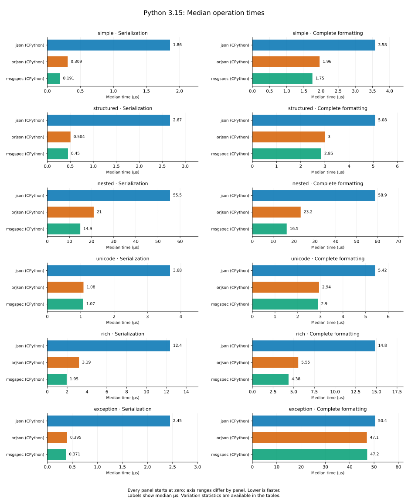
| Layer | Workload | Encoder | Median (µs) | IQR (µs) | Mean ± SD (µs) | Rounds × iterations |
|---|---|---|---|---|---|---|
| serialization | simple | json (CPython) | 1.86 | 0.022 | 1.9 ± 0.58 | 55,289 × 10 |
| serialization | simple | orjson (CPython) | 0.309 | 0.0077 | 0.315 ± 0.067 | 198,531 × 17 |
| serialization | simple | msgspec (CPython) | 0.191 | 0.0016 | 0.193 ± 0.015 | 53,368 × 100 |
| serialization | structured | json (CPython) | 2.67 | 0.046 | 2.72 ± 0.53 | 195,389 × 2 |
| serialization | structured | orjson (CPython) | 0.504 | 0.0083 | 0.512 ± 0.071 | 186,290 × 11 |
| serialization | structured | msgspec (CPython) | 0.45 | 0.013 | 0.456 ± 0.066 | 198,887 × 12 |
| serialization | nested | json (CPython) | 55.5 | 0.6 | 56.5 ± 9.4 | 18,474 × 1 |
| serialization | nested | orjson (CPython) | 21 | 0.13 | 21.2 ± 1.6 | 48,401 × 1 |
| serialization | nested | msgspec (CPython) | 14.9 | 0.17 | 15.1 ± 1.4 | 69,195 × 1 |
| serialization | unicode | json (CPython) | 3.68 | 0.04 | 3.74 ± 0.61 | 138,870 × 2 |
| serialization | unicode | orjson (CPython) | 1.08 | 0.015 | 1.1 ± 0.13 | 96,099 × 10 |
| serialization | unicode | msgspec (CPython) | 1.07 | 0.01 | 1.09 ± 0.12 | 94,287 × 10 |
| serialization | rich | json (CPython) | 12.4 | 0.19 | 12.6 ± 1.3 | 83,140 × 1 |
| serialization | rich | orjson (CPython) | 3.19 | 0.055 | 3.25 ± 0.51 | 163,962 × 2 |
| serialization | rich | msgspec (CPython) | 1.95 | 0.027 | 1.98 ± 0.16 | 53,000 × 10 |
| serialization | exception | json (CPython) | 2.45 | 0.022 | 2.48 ± 0.18 | 41,674 × 10 |
| serialization | exception | orjson (CPython) | 0.395 | 0.0064 | 0.4 ± 0.057 | 186,255 × 14 |
| serialization | exception | msgspec (CPython) | 0.371 | 0.0071 | 0.377 ± 0.055 | 198,531 × 14 |
| formatting | simple | json (CPython) | 3.58 | 0.06 | 3.65 ± 0.54 | 145,561 × 2 |
| formatting | simple | orjson (CPython) | 1.96 | 0.026 | 1.99 ± 0.16 | 52,387 × 10 |
| formatting | simple | msgspec (CPython) | 1.75 | 0.024 | 1.77 ± 0.16 | 58,597 × 10 |
| formatting | structured | json (CPython) | 5.08 | 0.08 | 5.16 ± 0.54 | 102,733 × 2 |
| formatting | structured | orjson (CPython) | 3 | 0.055 | 3.04 ± 0.4 | 174,551 × 2 |
| formatting | structured | msgspec (CPython) | 2.85 | 0.05 | 2.89 ± 0.41 | 182,883 × 2 |
| formatting | nested | json (CPython) | 58.9 | 0.79 | 60 ± 4.9 | 17,417 × 1 |
| formatting | nested | orjson (CPython) | 23.2 | 0.22 | 23.5 ± 1.8 | 43,987 × 1 |
| formatting | nested | msgspec (CPython) | 16.5 | 0.19 | 16.7 ± 1.4 | 62,251 × 1 |
| formatting | unicode | json (CPython) | 5.42 | 0.08 | 5.52 ± 0.89 | 189,826 × 1 |
| formatting | unicode | orjson (CPython) | 2.94 | 0.05 | 3 ± 0.46 | 176,741 × 2 |
| formatting | unicode | msgspec (CPython) | 2.9 | 0.045 | 2.94 ± 0.4 | 178,955 × 2 |
| formatting | rich | json (CPython) | 14.8 | 0.21 | 15.1 ± 1.4 | 69,877 × 1 |
| formatting | rich | orjson (CPython) | 5.55 | 0.1 | 5.65 ± 0.84 | 189,826 × 1 |
| formatting | rich | msgspec (CPython) | 4.38 | 0.07 | 4.44 ± 0.53 | 119,575 × 2 |
| formatting | exception | json (CPython) | 50.4 | 1.1 | 51.9 ± 4.9 | 20,419 × 1 |
| formatting | exception | orjson (CPython) | 47.1 | 0.92 | 48.3 ± 4.6 | 21,878 × 1 |
| formatting | exception | msgspec (CPython) | 47.2 | 0.95 | 48.5 ± 4.7 | 21,840 × 1 |
Speedup🔗
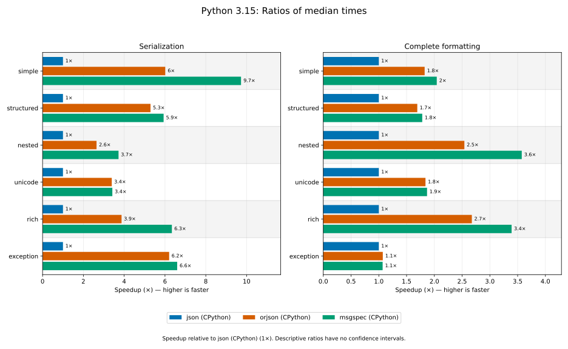
Reference: json (CPython) (1×).
| Layer | Workload | json (CPython) | orjson (CPython) | msgspec (CPython) |
|---|---|---|---|---|
| serialization | simple | 1× | 6× | 9.7× |
| serialization | structured | 1× | 5.3× | 5.9× |
| serialization | nested | 1× | 2.6× | 3.7× |
| serialization | unicode | 1× | 3.4× | 3.4× |
| serialization | rich | 1× | 3.9× | 6.3× |
| serialization | exception | 1× | 6.2× | 6.6× |
| formatting | simple | 1× | 1.8× | 2× |
| formatting | structured | 1× | 1.7× | 1.8× |
| formatting | nested | 1× | 2.5× | 3.6× |
| formatting | unicode | 1× | 1.8× | 1.9× |
| formatting | rich | 1× | 2.7× | 3.4× |
| formatting | exception | 1× | 1.1× | 1.1× |